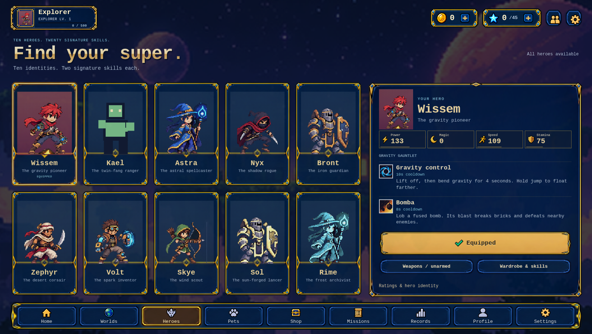
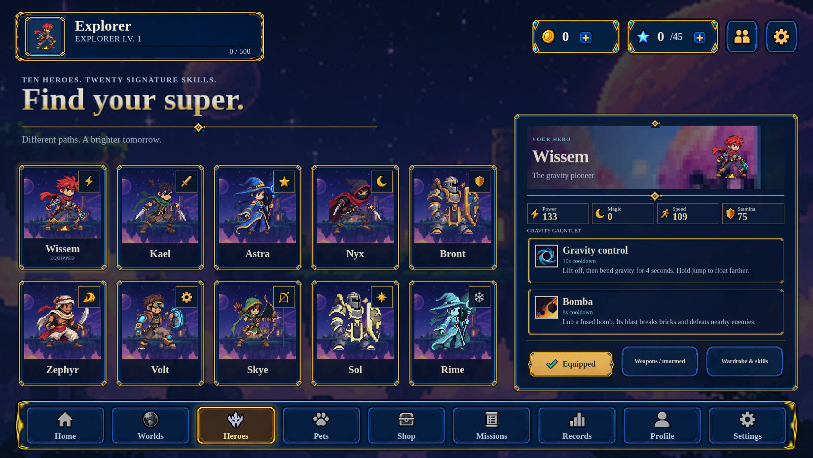
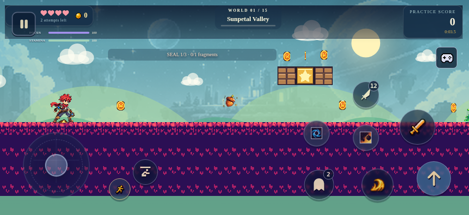
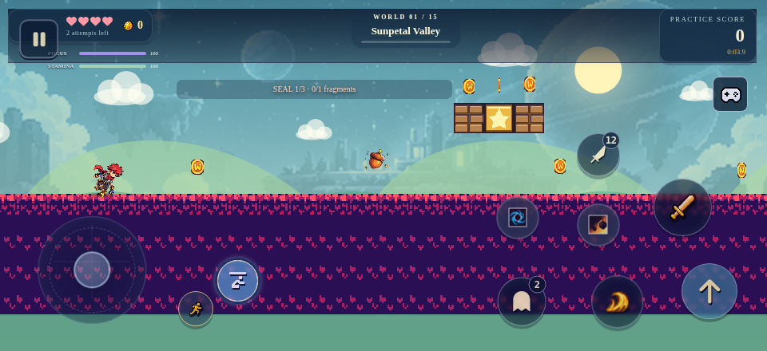
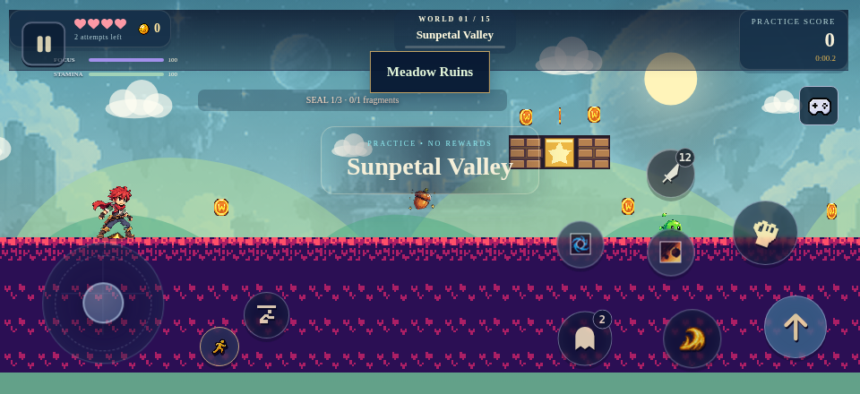

Full-resolution source captures are linked. After images are the actual locally rendered game, not generated mockups. Source/typeface/crouch-art limits are disclosed in UI-POLISH-REPORT.md. No native Android capture is claimed.
Larger shared shell; logo with a kicker/title/subtext block; vertically stacked scope rows; framed, scene-backed mode cards with aligned icons and light Adventure text.
Remaining: The smooth procedural platform, logo wording and cosmic backdrop are not the target’s isolated rocky pedestal / moon-castle illustration.
Updated compact960×440 captureSeparate image/caption/star bands; padded chapter groups; correct-aspect selected-world banner; separated diamond rule, objectives and primary CTA.
Remaining: A scrollable grid preserves all 15 worlds. World-lock states and stars come from the save, not the mockup’s example values.
Updated compact960×440 captureUniform 5×2 gallery with contained portraits, scene backgrounds and class badges; separated nameplates; raised selection panel; consistent skill frames; scrollable detail body with fixed actions. Actual Kael identity art is retained.
Remaining: Real artwork/role text is retained; compact screens scroll details. Baked-body unarmed portraits explicitly say identity-reference; this does not create a clean unarmed combat sheet.
Updated compact960×440 captureThree-column companion gallery; separated rarity, illustration, name and summon metadata; consistent corners and a padded detail panel.
Remaining: Locked companions remain locked. Source art differs from some mockup illustrations; no imaginary rescued pets are added.
Updated compact960×440 captureTransparent, alpha-bound contain-fit of the complete hero plus weapon; framed scene preview, independent slot toolbar and consistent piece-card borders/dividers.
Remaining: The six-slot catalog remains honestly unavailable until aligned clothing art exists; target example purchasable cards are not fabricated.
Updated compact960×440 captureIndependent consistent panel corners; illustration zone beside a padded content zone; separate title divider and correctly aligned progress/reward controls; regular grid gaps.
Remaining: Uses existing map scenery and supplied mission icons, not the target’s bespoke painted quest vignettes. Existing objectives/reward amounts are unchanged.
Updated compact960×440 captureBoth panels now share the same corner-preserving frame; aligned filters; clear rank/list title and diamond divider; accessible real empty-state action.
Remaining: Real local empty state remains. The mockup’s populated global-looking leaderboard is not evidence of a working server leaderboard.
Updated compact960×440 captureStructured identity/progress areas, two-column metric lines without false price boxes, consistent panel borders and section dividers; preserved functional tabs.
Remaining: Actual account/achievement data remains unchanged; target banners and richer collectible embellishments still need clean assets.
Updated compact960×440 captureUses existing original enemy art with separately cropped modest crowns; scene-backed cards, regular spacing, independent caption rules and difficulty controls; wider gallery coverage.
Remaining: Source bosses are not all the exact target illustrations. No boss clear or crown progress is fabricated.
Updated compact960×440 captureFramed three-column Controls/Adventure/Audio layout; kicker/headline/subtext and dividers; working live volume percentages; fixed reachable Done/X actions, with extras inside scrollable content.
Remaining: The game’s four-preset editor remains functional and occupies space not identical to the target. Columns scroll on compact landscape screens.
Updated compact960×440 capture

Temporary posture, not an authored new frame. Numeric badges remain; no action captions.


